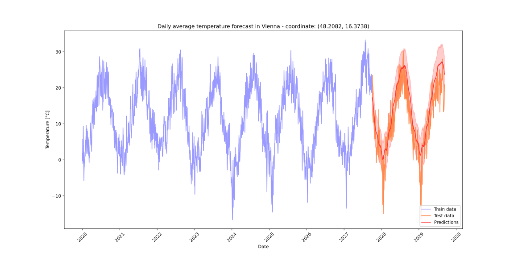
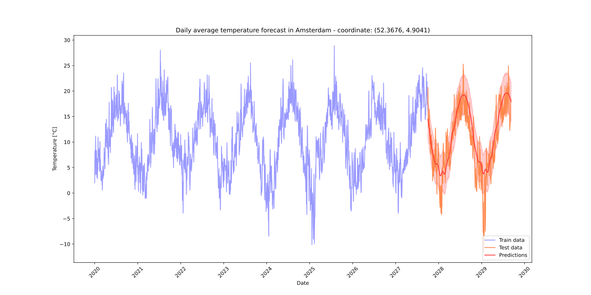

<!DOCTYPE html>
<html>
<head>
    
    <meta http-equiv="content-type" content="text/html; charset=UTF-8" />
    
        <script>
            L_NO_TOUCH = false;
            L_DISABLE_3D = false;
        </script>
    
    <style>html, body {width: 100%;height: 100%;margin: 0;padding: 0;}</style>
    <style>#map {position:absolute;top:0;bottom:0;right:0;left:0;}</style>
    <script src="https://cdn.jsdelivr.net/npm/leaflet@1.9.3/dist/leaflet.js"></script>
    <script src="https://code.jquery.com/jquery-3.7.1.min.js"></script>
    <script src="https://cdn.jsdelivr.net/npm/bootstrap@5.2.2/dist/js/bootstrap.bundle.min.js"></script>
    <script src="https://cdnjs.cloudflare.com/ajax/libs/Leaflet.awesome-markers/2.0.2/leaflet.awesome-markers.js"></script>
    <link rel="stylesheet" href="https://cdn.jsdelivr.net/npm/leaflet@1.9.3/dist/leaflet.css"/>
    <link rel="stylesheet" href="https://cdn.jsdelivr.net/npm/bootstrap@5.2.2/dist/css/bootstrap.min.css"/>
    <link rel="stylesheet" href="https://netdna.bootstrapcdn.com/bootstrap/3.0.0/css/bootstrap.min.css"/>
    <link rel="stylesheet" href="https://cdn.jsdelivr.net/npm/@fortawesome/fontawesome-free@6.2.0/css/all.min.css"/>
    <link rel="stylesheet" href="https://cdnjs.cloudflare.com/ajax/libs/Leaflet.awesome-markers/2.0.2/leaflet.awesome-markers.css"/>
    <link rel="stylesheet" href="https://cdn.jsdelivr.net/gh/python-visualization/folium/folium/templates/leaflet.awesome.rotate.min.css"/>
    
            <meta name="viewport" content="width=device-width,
                initial-scale=1.0, maximum-scale=1.0, user-scalable=no" />
            <style>
                #map_2b013e9e48997f901e63fa7e83945e8c {
                    position: relative;
                    width: 100.0%;
                    height: 100.0%;
                    left: 0.0%;
                    top: 0.0%;
                }
                .leaflet-container { font-size: 1rem; }
            </style>
        
</head>
<body>
    
    
            <div class="folium-map" id="map_2b013e9e48997f901e63fa7e83945e8c" ></div>
        
</body>
<script>
    
    
            var map_2b013e9e48997f901e63fa7e83945e8c = L.map(
                "map_2b013e9e48997f901e63fa7e83945e8c",
                {
                    center: [48.8566, 2.3522],
                    crs: L.CRS.EPSG3857,
                    zoom: 6,
                    zoomControl: true,
                    preferCanvas: false,
                }
            );

            

        
    
            var tile_layer_ff347ca9cbe4880b07419d88400399d8 = L.tileLayer(
                "https://tile.openstreetmap.org/{z}/{x}/{y}.png",
                {"attribution": "\u0026copy; \u003ca href=\"https://www.openstreetmap.org/copyright\"\u003eOpenStreetMap\u003c/a\u003e contributors", "detectRetina": false, "maxNativeZoom": 19, "maxZoom": 19, "minZoom": 0, "noWrap": false, "opacity": 1, "subdomains": "abc", "tms": false}
            );
        
    
            tile_layer_ff347ca9cbe4880b07419d88400399d8.addTo(map_2b013e9e48997f901e63fa7e83945e8c);
        
    
            var marker_7f7bae6e29ea29fb697557511ec98fee = L.marker(
                [48.2082, 16.3738],
                {}
            ).addTo(map_2b013e9e48997f901e63fa7e83945e8c);
        
    
            var icon_d300a69b08e5b64d05ee600e6ade2f33 = L.AwesomeMarkers.icon(
                {"extraClasses": "fa-rotate-0", "icon": "circle", "iconColor": "white", "markerColor": "darkblue", "prefix": "fa"}
            );
            marker_7f7bae6e29ea29fb697557511ec98fee.setIcon(icon_d300a69b08e5b64d05ee600e6ade2f33);
        
    
        var popup_727e69de512c6e576cbf97d62c716621 = L.popup({"maxWidth": 1000});

        
            
                var html_1f3469499e8e4c6cd918b97f0f0e606a = $(`<div id="html_1f3469499e8e4c6cd918b97f0f0e606a" style="width: 100.0%; height: 100.0%;"></div>`)[0];
                popup_727e69de512c6e576cbf97d62c716621.setContent(html_1f3469499e8e4c6cd918b97f0f0e606a);
            
        

        marker_7f7bae6e29ea29fb697557511ec98fee.bindPopup(popup_727e69de512c6e576cbf97d62c716621)
        ;

        
    
    
            var marker_98c47a3aeee09274c32284ec7235ca42 = L.marker(
                [50.8503, 4.3517],
                {}
            ).addTo(map_2b013e9e48997f901e63fa7e83945e8c);
        
    
            var icon_41915d8d59a053461be58d7be6740892 = L.AwesomeMarkers.icon(
                {"extraClasses": "fa-rotate-0", "icon": "circle", "iconColor": "white", "markerColor": "darkblue", "prefix": "fa"}
            );
            marker_98c47a3aeee09274c32284ec7235ca42.setIcon(icon_41915d8d59a053461be58d7be6740892);
        
    
        var popup_e575cc5e95b456f263ba8bdb92160e5d = L.popup({"maxWidth": 1000});

        
            
                var html_48797c7304a065b79ed0016b2b89ad9b = $(`<div id="html_48797c7304a065b79ed0016b2b89ad9b" style="width: 100.0%; height: 100.0%;"></div>`)[0];
                popup_e575cc5e95b456f263ba8bdb92160e5d.setContent(html_48797c7304a065b79ed0016b2b89ad9b);
            
        

        marker_98c47a3aeee09274c32284ec7235ca42.bindPopup(popup_e575cc5e95b456f263ba8bdb92160e5d)
        ;

        
    
    
            var marker_7eed94c1bfecc0f9209cbe1ddc126a2a = L.marker(
                [42.6977, 23.3219],
                {}
            ).addTo(map_2b013e9e48997f901e63fa7e83945e8c);
        
    
            var icon_1abba8a3940034c5a3321ceca5724fd9 = L.AwesomeMarkers.icon(
                {"extraClasses": "fa-rotate-0", "icon": "circle", "iconColor": "white", "markerColor": "darkblue", "prefix": "fa"}
            );
            marker_7eed94c1bfecc0f9209cbe1ddc126a2a.setIcon(icon_1abba8a3940034c5a3321ceca5724fd9);
        
    
        var popup_462414f21099bafd1541005ca81a817c = L.popup({"maxWidth": 1000});

        
            
                var html_2cabe1fffafbfcc30a720330f90dd386 = $(`<div id="html_2cabe1fffafbfcc30a720330f90dd386" style="width: 100.0%; height: 100.0%;"></div>`)[0];
                popup_462414f21099bafd1541005ca81a817c.setContent(html_2cabe1fffafbfcc30a720330f90dd386);
            
        

        marker_7eed94c1bfecc0f9209cbe1ddc126a2a.bindPopup(popup_462414f21099bafd1541005ca81a817c)
        ;

        
    
    
            var marker_2bdafe9b115e85788930400ac9c39058 = L.marker(
                [45.815, 15.9819],
                {}
            ).addTo(map_2b013e9e48997f901e63fa7e83945e8c);
        
    
            var icon_6d224d9963656e91f7a4dcd2bd61ae88 = L.AwesomeMarkers.icon(
                {"extraClasses": "fa-rotate-0", "icon": "circle", "iconColor": "white", "markerColor": "darkblue", "prefix": "fa"}
            );
            marker_2bdafe9b115e85788930400ac9c39058.setIcon(icon_6d224d9963656e91f7a4dcd2bd61ae88);
        
    
        var popup_c9b06fb67ee199597503b93154c0b9a1 = L.popup({"maxWidth": 1000});

        
            
                var html_7faa7e6bf6bd763379f42fdfbdb8a6b3 = $(`<div id="html_7faa7e6bf6bd763379f42fdfbdb8a6b3" style="width: 100.0%; height: 100.0%;"></div>`)[0];
                popup_c9b06fb67ee199597503b93154c0b9a1.setContent(html_7faa7e6bf6bd763379f42fdfbdb8a6b3);
            
        

        marker_2bdafe9b115e85788930400ac9c39058.bindPopup(popup_c9b06fb67ee199597503b93154c0b9a1)
        ;

        
    
    
            var marker_5bc33e7cf0d56d2536287075c0711b88 = L.marker(
                [35.1856, 33.3823],
                {}
            ).addTo(map_2b013e9e48997f901e63fa7e83945e8c);
        
    
            var icon_c74bec53d4a61df3e63e2adac26a6762 = L.AwesomeMarkers.icon(
                {"extraClasses": "fa-rotate-0", "icon": "circle", "iconColor": "white", "markerColor": "darkblue", "prefix": "fa"}
            );
            marker_5bc33e7cf0d56d2536287075c0711b88.setIcon(icon_c74bec53d4a61df3e63e2adac26a6762);
        
    
        var popup_61ae0c9232df6052e53fc6db6ed89032 = L.popup({"maxWidth": 1000});

        
            
                var html_babc86f0ed6c40f7c55ab47724710859 = $(`<div id="html_babc86f0ed6c40f7c55ab47724710859" style="width: 100.0%; height: 100.0%;"></div>`)[0];
                popup_61ae0c9232df6052e53fc6db6ed89032.setContent(html_babc86f0ed6c40f7c55ab47724710859);
            
        

        marker_5bc33e7cf0d56d2536287075c0711b88.bindPopup(popup_61ae0c9232df6052e53fc6db6ed89032)
        ;

        
    
    
            var marker_5fb4d970b43378fb6ff3e6856a5964f4 = L.marker(
                [50.0755, 14.4378],
                {}
            ).addTo(map_2b013e9e48997f901e63fa7e83945e8c);
        
    
            var icon_8159928c74fcd418e6efbefca3e8965f = L.AwesomeMarkers.icon(
                {"extraClasses": "fa-rotate-0", "icon": "circle", "iconColor": "white", "markerColor": "darkblue", "prefix": "fa"}
            );
            marker_5fb4d970b43378fb6ff3e6856a5964f4.setIcon(icon_8159928c74fcd418e6efbefca3e8965f);
        
    
        var popup_35ccd3c435be90d74106010ea17b66ba = L.popup({"maxWidth": 1000});

        
            
                var html_d164713cde32ba655c27bbf48defe577 = $(`<div id="html_d164713cde32ba655c27bbf48defe577" style="width: 100.0%; height: 100.0%;"></div>`)[0];
                popup_35ccd3c435be90d74106010ea17b66ba.setContent(html_d164713cde32ba655c27bbf48defe577);
            
        

        marker_5fb4d970b43378fb6ff3e6856a5964f4.bindPopup(popup_35ccd3c435be90d74106010ea17b66ba)
        ;

        
    
    
            var marker_fc7f41962281041ccd3da23156bf868a = L.marker(
                [55.6761, 12.5683],
                {}
            ).addTo(map_2b013e9e48997f901e63fa7e83945e8c);
        
    
            var icon_c2c6ee460fdd45ef00691efa16ab6898 = L.AwesomeMarkers.icon(
                {"extraClasses": "fa-rotate-0", "icon": "circle", "iconColor": "white", "markerColor": "darkblue", "prefix": "fa"}
            );
            marker_fc7f41962281041ccd3da23156bf868a.setIcon(icon_c2c6ee460fdd45ef00691efa16ab6898);
        
    
        var popup_627809be222b68acd6919d14b28b3c4e = L.popup({"maxWidth": 1000});

        
            
                var html_6d5a4fca08615153535ee9be5a58a583 = $(`<div id="html_6d5a4fca08615153535ee9be5a58a583" style="width: 100.0%; height: 100.0%;"></div>`)[0];
                popup_627809be222b68acd6919d14b28b3c4e.setContent(html_6d5a4fca08615153535ee9be5a58a583);
            
        

        marker_fc7f41962281041ccd3da23156bf868a.bindPopup(popup_627809be222b68acd6919d14b28b3c4e)
        ;

        
    
    
            var marker_9ddcdaaac3c5ea6a2be4d9233f482eff = L.marker(
                [59.437, 24.7535],
                {}
            ).addTo(map_2b013e9e48997f901e63fa7e83945e8c);
        
    
            var icon_0bf65d780c1d5161d97cde961b9e54d8 = L.AwesomeMarkers.icon(
                {"extraClasses": "fa-rotate-0", "icon": "circle", "iconColor": "white", "markerColor": "darkblue", "prefix": "fa"}
            );
            marker_9ddcdaaac3c5ea6a2be4d9233f482eff.setIcon(icon_0bf65d780c1d5161d97cde961b9e54d8);
        
    
        var popup_5bef6d23092b7408d9c0dc26adff2478 = L.popup({"maxWidth": 1000});

        
            
                var html_73b0a5806a88f1982d034d6b03c1f553 = $(`<div id="html_73b0a5806a88f1982d034d6b03c1f553" style="width: 100.0%; height: 100.0%;"></div>`)[0];
                popup_5bef6d23092b7408d9c0dc26adff2478.setContent(html_73b0a5806a88f1982d034d6b03c1f553);
            
        

        marker_9ddcdaaac3c5ea6a2be4d9233f482eff.bindPopup(popup_5bef6d23092b7408d9c0dc26adff2478)
        ;

        
    
    
            var marker_9df2aa68943ea0c5287917988b302b32 = L.marker(
                [60.1695, 24.9355],
                {}
            ).addTo(map_2b013e9e48997f901e63fa7e83945e8c);
        
    
            var icon_bacaaf734e7355f194979161f4bec72a = L.AwesomeMarkers.icon(
                {"extraClasses": "fa-rotate-0", "icon": "circle", "iconColor": "white", "markerColor": "darkblue", "prefix": "fa"}
            );
            marker_9df2aa68943ea0c5287917988b302b32.setIcon(icon_bacaaf734e7355f194979161f4bec72a);
        
    
        var popup_fb12abc6a23302ce2fbefa6579720b12 = L.popup({"maxWidth": 1000});

        
            
                var html_7d62b1a9003e0f2c6b06837afc5e6f94 = $(`<div id="html_7d62b1a9003e0f2c6b06837afc5e6f94" style="width: 100.0%; height: 100.0%;"></div>`)[0];
                popup_fb12abc6a23302ce2fbefa6579720b12.setContent(html_7d62b1a9003e0f2c6b06837afc5e6f94);
            
        

        marker_9df2aa68943ea0c5287917988b302b32.bindPopup(popup_fb12abc6a23302ce2fbefa6579720b12)
        ;

        
    
    
            var marker_428fbffb450827d7c6c0aee38997c128 = L.marker(
                [48.8566, 2.3522],
                {}
            ).addTo(map_2b013e9e48997f901e63fa7e83945e8c);
        
    
            var icon_d8e4b1e82b6b439bbb223fc8a1ea1911 = L.AwesomeMarkers.icon(
                {"extraClasses": "fa-rotate-0", "icon": "circle", "iconColor": "white", "markerColor": "darkblue", "prefix": "fa"}
            );
            marker_428fbffb450827d7c6c0aee38997c128.setIcon(icon_d8e4b1e82b6b439bbb223fc8a1ea1911);
        
    
        var popup_a977205267db4d66b62821d3d0e0c014 = L.popup({"maxWidth": 1000});

        
            
                var html_137d1a688a27a6c347da85e1681bdcef = $(`<div id="html_137d1a688a27a6c347da85e1681bdcef" style="width: 100.0%; height: 100.0%;"></div>`)[0];
                popup_a977205267db4d66b62821d3d0e0c014.setContent(html_137d1a688a27a6c347da85e1681bdcef);
            
        

        marker_428fbffb450827d7c6c0aee38997c128.bindPopup(popup_a977205267db4d66b62821d3d0e0c014)
        ;

        
    
    
            var marker_73f6483d40be4cbe6c27fea6acada115 = L.marker(
                [52.52, 13.405],
                {}
            ).addTo(map_2b013e9e48997f901e63fa7e83945e8c);
        
    
            var icon_6d7557d5988a64d7d64653d46180a6a6 = L.AwesomeMarkers.icon(
                {"extraClasses": "fa-rotate-0", "icon": "circle", "iconColor": "white", "markerColor": "darkblue", "prefix": "fa"}
            );
            marker_73f6483d40be4cbe6c27fea6acada115.setIcon(icon_6d7557d5988a64d7d64653d46180a6a6);
        
    
        var popup_e70323d1e9c569dd286e518a2e261f95 = L.popup({"maxWidth": 1000});

        
            
                var html_2aca919579aca1cc41638f19a23d986e = $(`<div id="html_2aca919579aca1cc41638f19a23d986e" style="width: 100.0%; height: 100.0%;"></div>`)[0];
                popup_e70323d1e9c569dd286e518a2e261f95.setContent(html_2aca919579aca1cc41638f19a23d986e);
            
        

        marker_73f6483d40be4cbe6c27fea6acada115.bindPopup(popup_e70323d1e9c569dd286e518a2e261f95)
        ;

        
    
    
            var marker_a313dcb481866a2b4812140f1a161427 = L.marker(
                [37.9838, 23.7275],
                {}
            ).addTo(map_2b013e9e48997f901e63fa7e83945e8c);
        
    
            var icon_63fab11268a457c1f937a002c51559e5 = L.AwesomeMarkers.icon(
                {"extraClasses": "fa-rotate-0", "icon": "circle", "iconColor": "white", "markerColor": "darkblue", "prefix": "fa"}
            );
            marker_a313dcb481866a2b4812140f1a161427.setIcon(icon_63fab11268a457c1f937a002c51559e5);
        
    
        var popup_bf40056520065cfaf789cda25b5432f7 = L.popup({"maxWidth": 1000});

        
            
                var html_a0e7a4123193852c73bcfcb95aa76cf3 = $(`<div id="html_a0e7a4123193852c73bcfcb95aa76cf3" style="width: 100.0%; height: 100.0%;"></div>`)[0];
                popup_bf40056520065cfaf789cda25b5432f7.setContent(html_a0e7a4123193852c73bcfcb95aa76cf3);
            
        

        marker_a313dcb481866a2b4812140f1a161427.bindPopup(popup_bf40056520065cfaf789cda25b5432f7)
        ;

        
    
    
            var marker_54773809dbd5d51891c6bd89918af1e6 = L.marker(
                [47.4979, 19.0402],
                {}
            ).addTo(map_2b013e9e48997f901e63fa7e83945e8c);
        
    
            var icon_46fedc36d5cf349b2e56ce0f4933e571 = L.AwesomeMarkers.icon(
                {"extraClasses": "fa-rotate-0", "icon": "circle", "iconColor": "white", "markerColor": "darkblue", "prefix": "fa"}
            );
            marker_54773809dbd5d51891c6bd89918af1e6.setIcon(icon_46fedc36d5cf349b2e56ce0f4933e571);
        
    
        var popup_6ea77d9c54cb2fe60a0cad47aafecaa0 = L.popup({"maxWidth": 1000});

        
            
                var html_32194ed5f0ef005749e51006653742ae = $(`<div id="html_32194ed5f0ef005749e51006653742ae" style="width: 100.0%; height: 100.0%;"></div>`)[0];
                popup_6ea77d9c54cb2fe60a0cad47aafecaa0.setContent(html_32194ed5f0ef005749e51006653742ae);
            
        

        marker_54773809dbd5d51891c6bd89918af1e6.bindPopup(popup_6ea77d9c54cb2fe60a0cad47aafecaa0)
        ;

        
    
    
            var marker_4936b682c26ab24baa409ea4e8dcab3c = L.marker(
                [53.3498, -6.2603],
                {}
            ).addTo(map_2b013e9e48997f901e63fa7e83945e8c);
        
    
            var icon_f08557e2ddac3ec87e383b91aafc0d55 = L.AwesomeMarkers.icon(
                {"extraClasses": "fa-rotate-0", "icon": "circle", "iconColor": "white", "markerColor": "darkblue", "prefix": "fa"}
            );
            marker_4936b682c26ab24baa409ea4e8dcab3c.setIcon(icon_f08557e2ddac3ec87e383b91aafc0d55);
        
    
        var popup_63641fbed97a1542a9164d18b2c7f6ee = L.popup({"maxWidth": 1000});

        
            
                var html_b30289a3f19164fe426f405c2eb62357 = $(`<div id="html_b30289a3f19164fe426f405c2eb62357" style="width: 100.0%; height: 100.0%;"></div>`)[0];
                popup_63641fbed97a1542a9164d18b2c7f6ee.setContent(html_b30289a3f19164fe426f405c2eb62357);
            
        

        marker_4936b682c26ab24baa409ea4e8dcab3c.bindPopup(popup_63641fbed97a1542a9164d18b2c7f6ee)
        ;

        
    
    
            var marker_909124c97a625af4849f9d00528a4aa8 = L.marker(
                [41.9028, 12.4964],
                {}
            ).addTo(map_2b013e9e48997f901e63fa7e83945e8c);
        
    
            var icon_6b79a6fe8f46bf8b9acd7bc4f8f58efe = L.AwesomeMarkers.icon(
                {"extraClasses": "fa-rotate-0", "icon": "circle", "iconColor": "white", "markerColor": "darkblue", "prefix": "fa"}
            );
            marker_909124c97a625af4849f9d00528a4aa8.setIcon(icon_6b79a6fe8f46bf8b9acd7bc4f8f58efe);
        
    
        var popup_f8da2c050888bf13d7eb4640a72e398a = L.popup({"maxWidth": 1000});

        
            
                var html_f32f551e488c70dc4631d0d416f06c0a = $(`<div id="html_f32f551e488c70dc4631d0d416f06c0a" style="width: 100.0%; height: 100.0%;"></div>`)[0];
                popup_f8da2c050888bf13d7eb4640a72e398a.setContent(html_f32f551e488c70dc4631d0d416f06c0a);
            
        

        marker_909124c97a625af4849f9d00528a4aa8.bindPopup(popup_f8da2c050888bf13d7eb4640a72e398a)
        ;

        
    
    
            var marker_d4f4dd0ec5f31725580082c3b5288f8b = L.marker(
                [56.9496, 24.1052],
                {}
            ).addTo(map_2b013e9e48997f901e63fa7e83945e8c);
        
    
            var icon_aaff1344df3e534688a8f51884306eed = L.AwesomeMarkers.icon(
                {"extraClasses": "fa-rotate-0", "icon": "circle", "iconColor": "white", "markerColor": "darkblue", "prefix": "fa"}
            );
            marker_d4f4dd0ec5f31725580082c3b5288f8b.setIcon(icon_aaff1344df3e534688a8f51884306eed);
        
    
        var popup_0319be45d15e21cb439a24c1c0ea6b28 = L.popup({"maxWidth": 1000});

        
            
                var html_5feb1458ec4382477b865baff1ddce31 = $(`<div id="html_5feb1458ec4382477b865baff1ddce31" style="width: 100.0%; height: 100.0%;"></div>`)[0];
                popup_0319be45d15e21cb439a24c1c0ea6b28.setContent(html_5feb1458ec4382477b865baff1ddce31);
            
        

        marker_d4f4dd0ec5f31725580082c3b5288f8b.bindPopup(popup_0319be45d15e21cb439a24c1c0ea6b28)
        ;

        
    
    
            var marker_03f95e74acbfacdbb619edbbf741be18 = L.marker(
                [54.6872, 25.2797],
                {}
            ).addTo(map_2b013e9e48997f901e63fa7e83945e8c);
        
    
            var icon_348301cb9006e93189775dcf0b977042 = L.AwesomeMarkers.icon(
                {"extraClasses": "fa-rotate-0", "icon": "circle", "iconColor": "white", "markerColor": "darkblue", "prefix": "fa"}
            );
            marker_03f95e74acbfacdbb619edbbf741be18.setIcon(icon_348301cb9006e93189775dcf0b977042);
        
    
        var popup_699182d6d2edaaac4c7065bda2eaaee8 = L.popup({"maxWidth": 1000});

        
            
                var html_532911fe3442bafbdaa153f24cfcdded = $(`<div id="html_532911fe3442bafbdaa153f24cfcdded" style="width: 100.0%; height: 100.0%;"></div>`)[0];
                popup_699182d6d2edaaac4c7065bda2eaaee8.setContent(html_532911fe3442bafbdaa153f24cfcdded);
            
        

        marker_03f95e74acbfacdbb619edbbf741be18.bindPopup(popup_699182d6d2edaaac4c7065bda2eaaee8)
        ;

        
    
    
            var marker_a9dea12c2e0a8756babdebaf196e8ab0 = L.marker(
                [49.6117, 6.1319],
                {}
            ).addTo(map_2b013e9e48997f901e63fa7e83945e8c);
        
    
            var icon_404abbc8ded6c3aa70434db04af98197 = L.AwesomeMarkers.icon(
                {"extraClasses": "fa-rotate-0", "icon": "circle", "iconColor": "white", "markerColor": "darkblue", "prefix": "fa"}
            );
            marker_a9dea12c2e0a8756babdebaf196e8ab0.setIcon(icon_404abbc8ded6c3aa70434db04af98197);
        
    
        var popup_9b6d30c61709c6e65c13e55718826f29 = L.popup({"maxWidth": 1000});

        
            
                var html_f04af124d860a7d80715339a70011afa = $(`<div id="html_f04af124d860a7d80715339a70011afa" style="width: 100.0%; height: 100.0%;"></div>`)[0];
                popup_9b6d30c61709c6e65c13e55718826f29.setContent(html_f04af124d860a7d80715339a70011afa);
            
        

        marker_a9dea12c2e0a8756babdebaf196e8ab0.bindPopup(popup_9b6d30c61709c6e65c13e55718826f29)
        ;

        
    
    
            var marker_9a3fc819232e35e707752f8bc7701c3b = L.marker(
                [35.897, 14.5126],
                {}
            ).addTo(map_2b013e9e48997f901e63fa7e83945e8c);
        
    
            var icon_8753c03037d9be10bc309652481df7ae = L.AwesomeMarkers.icon(
                {"extraClasses": "fa-rotate-0", "icon": "circle", "iconColor": "white", "markerColor": "darkblue", "prefix": "fa"}
            );
            marker_9a3fc819232e35e707752f8bc7701c3b.setIcon(icon_8753c03037d9be10bc309652481df7ae);
        
    
        var popup_a3fbb7dbd440fec96e1196d6144732d3 = L.popup({"maxWidth": 1000});

        
            
                var html_be6021f627523db34f08c4b72cdd5d6a = $(`<div id="html_be6021f627523db34f08c4b72cdd5d6a" style="width: 100.0%; height: 100.0%;"></div>`)[0];
                popup_a3fbb7dbd440fec96e1196d6144732d3.setContent(html_be6021f627523db34f08c4b72cdd5d6a);
            
        

        marker_9a3fc819232e35e707752f8bc7701c3b.bindPopup(popup_a3fbb7dbd440fec96e1196d6144732d3)
        ;

        
    
    
            var marker_1ec854e9e19d0289ff0ef6a8ec29d29c = L.marker(
                [52.3676, 4.9041],
                {}
            ).addTo(map_2b013e9e48997f901e63fa7e83945e8c);
        
    
            var icon_15efd8bfc93784ac26ec956bd97a4dcd = L.AwesomeMarkers.icon(
                {"extraClasses": "fa-rotate-0", "icon": "circle", "iconColor": "white", "markerColor": "darkblue", "prefix": "fa"}
            );
            marker_1ec854e9e19d0289ff0ef6a8ec29d29c.setIcon(icon_15efd8bfc93784ac26ec956bd97a4dcd);
        
    
        var popup_973ba4e0154c90e9d0554f3514e7f74f = L.popup({"maxWidth": 1000});

        
            
                var html_609ff00d999c451dc57b76d708dc9d56 = $(`<div id="html_609ff00d999c451dc57b76d708dc9d56" style="width: 100.0%; height: 100.0%;"></div>`)[0];
                popup_973ba4e0154c90e9d0554f3514e7f74f.setContent(html_609ff00d999c451dc57b76d708dc9d56);
            
        

        marker_1ec854e9e19d0289ff0ef6a8ec29d29c.bindPopup(popup_973ba4e0154c90e9d0554f3514e7f74f)
        ;

        
    
    
            var marker_604460757efa071d214f2f510192bae0 = L.marker(
                [52.2297, 21.0122],
                {}
            ).addTo(map_2b013e9e48997f901e63fa7e83945e8c);
        
    
            var icon_8b1b826e7411596047b3d39b4ab1dc8f = L.AwesomeMarkers.icon(
                {"extraClasses": "fa-rotate-0", "icon": "circle", "iconColor": "white", "markerColor": "darkblue", "prefix": "fa"}
            );
            marker_604460757efa071d214f2f510192bae0.setIcon(icon_8b1b826e7411596047b3d39b4ab1dc8f);
        
    
        var popup_23195d4a8c6133cce8e88298f3c475b1 = L.popup({"maxWidth": 1000});

        
            
                var html_6da572b5db7a644495f0842accec54d1 = $(`<div id="html_6da572b5db7a644495f0842accec54d1" style="width: 100.0%; height: 100.0%;"></div>`)[0];
                popup_23195d4a8c6133cce8e88298f3c475b1.setContent(html_6da572b5db7a644495f0842accec54d1);
            
        

        marker_604460757efa071d214f2f510192bae0.bindPopup(popup_23195d4a8c6133cce8e88298f3c475b1)
        ;

        
    
    
            var marker_cba0202b1d7121551c6cf3525f625f97 = L.marker(
                [38.7223, -9.1393],
                {}
            ).addTo(map_2b013e9e48997f901e63fa7e83945e8c);
        
    
            var icon_d33d8659a120da5a0511f1311cbeaed8 = L.AwesomeMarkers.icon(
                {"extraClasses": "fa-rotate-0", "icon": "circle", "iconColor": "white", "markerColor": "darkblue", "prefix": "fa"}
            );
            marker_cba0202b1d7121551c6cf3525f625f97.setIcon(icon_d33d8659a120da5a0511f1311cbeaed8);
        
    
        var popup_3e1eec0d9452d310a32f86c52a6a665c = L.popup({"maxWidth": 1000});

        
            
                var html_80102630e38716b2d7db95a4632a1e1c = $(`<div id="html_80102630e38716b2d7db95a4632a1e1c" style="width: 100.0%; height: 100.0%;"></div>`)[0];
                popup_3e1eec0d9452d310a32f86c52a6a665c.setContent(html_80102630e38716b2d7db95a4632a1e1c);
            
        

        marker_cba0202b1d7121551c6cf3525f625f97.bindPopup(popup_3e1eec0d9452d310a32f86c52a6a665c)
        ;

        
    
    
            var marker_e7ade2efdb4e9a459d8fce151b249f63 = L.marker(
                [44.4268, 26.1025],
                {}
            ).addTo(map_2b013e9e48997f901e63fa7e83945e8c);
        
    
            var icon_929a089f409df5a2945788251c524fb3 = L.AwesomeMarkers.icon(
                {"extraClasses": "fa-rotate-0", "icon": "circle", "iconColor": "white", "markerColor": "darkblue", "prefix": "fa"}
            );
            marker_e7ade2efdb4e9a459d8fce151b249f63.setIcon(icon_929a089f409df5a2945788251c524fb3);
        
    
        var popup_bbf9391f452fcf68b82a78b69ca92a5d = L.popup({"maxWidth": 1000});

        
            
                var html_f2930a21a48f238ea66db074d18e00dd = $(`<div id="html_f2930a21a48f238ea66db074d18e00dd" style="width: 100.0%; height: 100.0%;"></div>`)[0];
                popup_bbf9391f452fcf68b82a78b69ca92a5d.setContent(html_f2930a21a48f238ea66db074d18e00dd);
            
        

        marker_e7ade2efdb4e9a459d8fce151b249f63.bindPopup(popup_bbf9391f452fcf68b82a78b69ca92a5d)
        ;

        
    
    
            var marker_4c76faa4238809390fc6da7330b4127e = L.marker(
                [48.1486, 17.1077],
                {}
            ).addTo(map_2b013e9e48997f901e63fa7e83945e8c);
        
    
            var icon_7fd76e856459d2782b038cf98171e15a = L.AwesomeMarkers.icon(
                {"extraClasses": "fa-rotate-0", "icon": "circle", "iconColor": "white", "markerColor": "darkblue", "prefix": "fa"}
            );
            marker_4c76faa4238809390fc6da7330b4127e.setIcon(icon_7fd76e856459d2782b038cf98171e15a);
        
    
        var popup_9b57a0c24fd7aed7440799f3226f1973 = L.popup({"maxWidth": 1000});

        
            
                var html_3d3719dbec6529abd913840ceec30fbc = $(`<div id="html_3d3719dbec6529abd913840ceec30fbc" style="width: 100.0%; height: 100.0%;"></div>`)[0];
                popup_9b57a0c24fd7aed7440799f3226f1973.setContent(html_3d3719dbec6529abd913840ceec30fbc);
            
        

        marker_4c76faa4238809390fc6da7330b4127e.bindPopup(popup_9b57a0c24fd7aed7440799f3226f1973)
        ;

        
    
    
            var marker_13adb21a3ed0002ab008e1d7c198f5d3 = L.marker(
                [46.0569, 14.5058],
                {}
            ).addTo(map_2b013e9e48997f901e63fa7e83945e8c);
        
    
            var icon_bd04458a3a365725169ddcfee638c1f5 = L.AwesomeMarkers.icon(
                {"extraClasses": "fa-rotate-0", "icon": "circle", "iconColor": "white", "markerColor": "darkblue", "prefix": "fa"}
            );
            marker_13adb21a3ed0002ab008e1d7c198f5d3.setIcon(icon_bd04458a3a365725169ddcfee638c1f5);
        
    
        var popup_4d13e850658ce3a86fb0873fe67321cd = L.popup({"maxWidth": 1000});

        
            
                var html_b5239a3778e608878c5da4fdfc3cee4b = $(`<div id="html_b5239a3778e608878c5da4fdfc3cee4b" style="width: 100.0%; height: 100.0%;"></div>`)[0];
                popup_4d13e850658ce3a86fb0873fe67321cd.setContent(html_b5239a3778e608878c5da4fdfc3cee4b);
            
        

        marker_13adb21a3ed0002ab008e1d7c198f5d3.bindPopup(popup_4d13e850658ce3a86fb0873fe67321cd)
        ;

        
    
    
            var marker_0a0f4ccca202e64567495144149374fb = L.marker(
                [40.4168, -3.7038],
                {}
            ).addTo(map_2b013e9e48997f901e63fa7e83945e8c);
        
    
            var icon_2ab9715a71c3d3444f02c714d4314c12 = L.AwesomeMarkers.icon(
                {"extraClasses": "fa-rotate-0", "icon": "circle", "iconColor": "white", "markerColor": "darkblue", "prefix": "fa"}
            );
            marker_0a0f4ccca202e64567495144149374fb.setIcon(icon_2ab9715a71c3d3444f02c714d4314c12);
        
    
        var popup_9e2ed652e5e931f2d5b85b5916f181c3 = L.popup({"maxWidth": 1000});

        
            
                var html_c91ecc45fe7850505c320ff739b9bbb5 = $(`<div id="html_c91ecc45fe7850505c320ff739b9bbb5" style="width: 100.0%; height: 100.0%;"></div>`)[0];
                popup_9e2ed652e5e931f2d5b85b5916f181c3.setContent(html_c91ecc45fe7850505c320ff739b9bbb5);
            
        

        marker_0a0f4ccca202e64567495144149374fb.bindPopup(popup_9e2ed652e5e931f2d5b85b5916f181c3)
        ;

        
    
    
            var marker_c0550bcf23c31e8c3cb3e995ee577cbe = L.marker(
                [59.3293, 18.0686],
                {}
            ).addTo(map_2b013e9e48997f901e63fa7e83945e8c);
        
    
            var icon_49bd2210cfa6d3a70d2d0f0d67189970 = L.AwesomeMarkers.icon(
                {"extraClasses": "fa-rotate-0", "icon": "circle", "iconColor": "white", "markerColor": "darkblue", "prefix": "fa"}
            );
            marker_c0550bcf23c31e8c3cb3e995ee577cbe.setIcon(icon_49bd2210cfa6d3a70d2d0f0d67189970);
        
    
        var popup_352d2d6170529b06079c931a309c1386 = L.popup({"maxWidth": 1000});

        
            
                var html_37edd1cd50338b45f58696502018c03d = $(`<div id="html_37edd1cd50338b45f58696502018c03d" style="width: 100.0%; height: 100.0%;"></div>`)[0];
                popup_352d2d6170529b06079c931a309c1386.setContent(html_37edd1cd50338b45f58696502018c03d);
            
        

        marker_c0550bcf23c31e8c3cb3e995ee577cbe.bindPopup(popup_352d2d6170529b06079c931a309c1386)
        ;

        
    
</script>
</html>